클라우드폰 한 대 만들기
영상은 아무도 손대지 않은 폰이 인스타그램에 릴스를 올리는 장면으로 시작해요. 이 강좌 앞 편에서 devicefarm.io로 클라우드폰을 빌리는 법을 다뤘고, 이번 편은 거기에 AI를 붙여요. 화자는 시작하기 전에 교육용 영상이고, 플랫폼마다 규칙이 있으니 각자 확인하고, 쓰는 건 본인 책임이라고 못 박아 둬요.
AI를 붙이면 계정 만들기, 릴스·스토리 올리기, 팔로우, DM(Direct Message)까지 사람이 손으로 하던 일은 거의 다 시킬 수 있다고 해요. 화면에는 devicefarm에 이미 올라와 있는 인스타그램 자동화 카드가 나와요. 주황색 테두리가 둘러싼 두 장이 이번 데모에서 할 일인 'Post Reels video on Instagram'과 'Instagram — 1 story'예요.
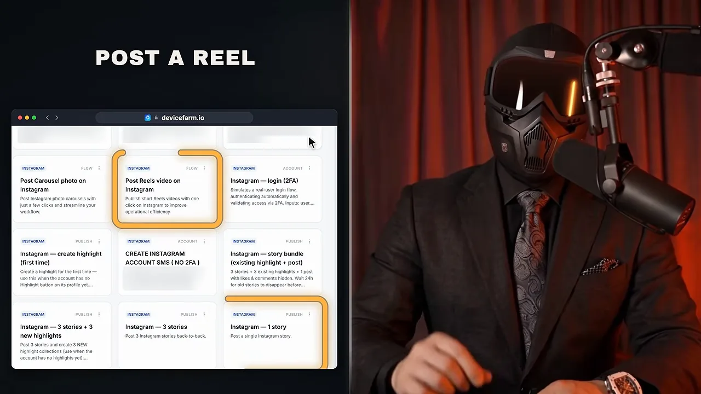
폰을 만들 때 신경 쓸 두 칸
New phone을 누르고 이름을 붙이면, 나머지는 대부분 기본값으로 둬도 된다고 해요. 신경 쓸 곳은 두 칸이에요. 첫째는 프록시예요. 아래 화면의 Proxy 칸에서 Type은 SOCKS5(Socket Secure version 5), Port는 10800이 들어가 있고, Host 칸에 프록시 주소를 붙여 넣어요.
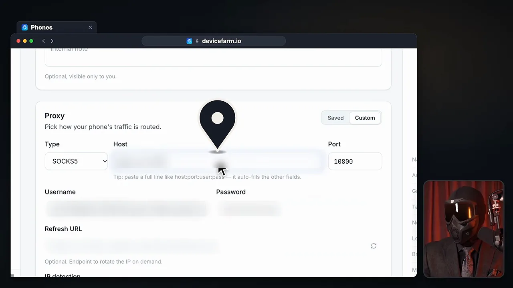
둘째는 Advanced 아래의 Network예요. 넣은 프록시가 모바일 프록시면 Cellular를, 레지덴셜이나 ISP 프록시면 Wi-Fi를 골라요. 화면은 Cellular를 누르는 순간이고, 옆에 'MOBILE' 표시가 떠 있어요.
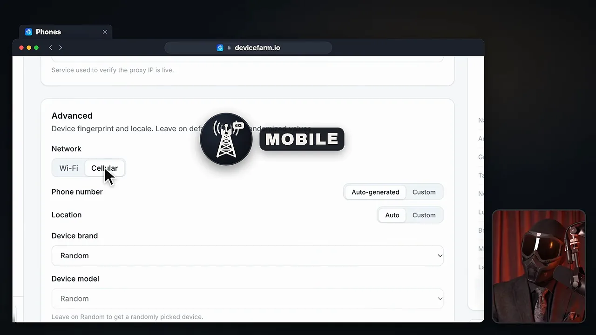
그 아래 기기 브랜드와 모델은 Random, 언어는 English (United States)로 둔 채 Create phone을 눌러요. 폰을 켜고 View를 누르면 브라우저 안에 폰 화면이 뜨고, Play 스토어에서 인스타그램을 깔아 로그인하면 준비가 끝나요.
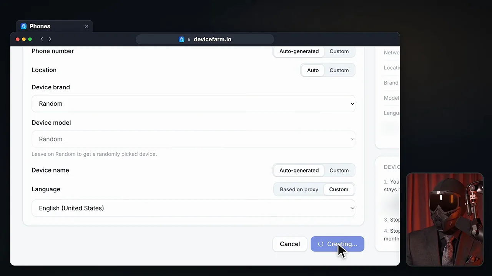
이어서 화자는 완성된 모습을 먼저 보여 줘요. 빨리 감기만 했고 자른 곳은 없다며, 왼쪽 위 경과 시간과 폰의 시계를 보라고 해요. AI가 인스타그램을 열고 릴스 게시 화면에서 Share까지 가요.
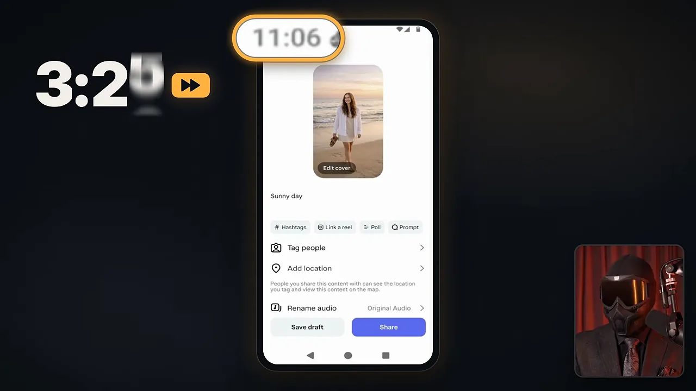
프록시: 목적에 따라 고르기
화자는 AI보다 이 선택이 모든 걸 정한다고 말해요. 잘못 고르면 시작하기도 전에 계정이 죽는다고 해요. IP는 인터넷 위의 집 주소 같은 거고, 인스타그램도 이 주소를 봐요. 프록시는 폰에 다른 주소를 하나 빌려주는 서비스이고, devicefarm에선 폰마다 하나씩 꼭 필요해요. 앞 섹션의 Proxy 칸이 바로 그 자리예요.
세 가지 프록시
화자가 소개하는 세 종류를 표로 옮기면 이래요. 주소가 어디서 오는지, 나만 쓰는지, 바뀌는지가 기준이에요.
| 종류 | 주소의 출처 | 나만 쓰나요 | 주소가 바뀌나요 | Network 설정 |
|---|---|---|---|---|
| 모바일 프록시 | 4G 같은 통신망 | 여러 사람이 함께 써요 | 계속 바뀌어요 | Cellular |
| 레지덴셜 프록시 | 실제 가정용 인터넷 | 함께 써요 | 바뀌어요 | Wi-Fi |
| 전용 ISP 프록시 | 가정 주소처럼 보이는 주소 | 나만 써요 | 절대 안 바뀌어요 | Wi-Fi |
세 번째 종류를 소개하는 장면이에요. 집 모양 아이콘 옆에 자물쇠 달린 ISP 핀이 있고, 그 핀이 오른쪽 폰 하나에만 붙어 있어요.
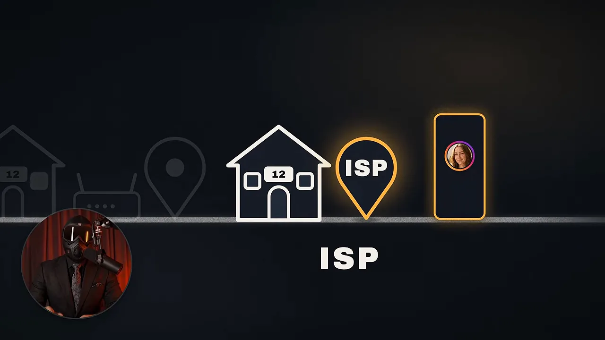
목적이 프록시를 정해요
화자는 '아무도 안 알려 주는 것'이라며, 목적이 두 가지로 갈리고 둘은 전혀 다른 프록시를 쓴다고 해요. 대량 팔로우·대량 DM용으로 찍어 내는 계정은 하루이틀이면 정지되고, 화자는 그게 원래 그런 판이라고 말해요. 반대로 대부분이 원하는 건 몇 달 동안 신뢰와 도달을 쌓는 계정 하나예요.
flowchart LR G["무엇을 하려나요?"] --> A["대량 계정
팔로우·DM용, 1~2일이면 정지"] G --> B["오래 키울 계정
몇 달 동안 신뢰·도달 쌓기"] A --> PA["GB 단위 모바일·레지덴셜 프록시
IP가 바뀌어도 상관없음"] B --> PB["전용 ISP 프록시
계정 하나 · 폰 하나 · IP 하나"]
IP가 바뀌면 왜 계정이 죽나요
화자는 캘리포니아 예를 들어요. 폰을 캘리포니아 IP로 만들면 시간대, 위치, 설정이 모두 캘리포니아에 맞춰져요. 그런데 모바일·레지덴셜 프록시는 주소가 돌아가며 바뀌어요. 'sticky'라며 한동안 같은 주소를 보장하는 상품도 있지만, 화자는 결국엔 꼭 바뀐다고 거듭 말해요. 아래 장면이 그 결과예요. 폰은 여전히 캘리포니아 설정인데 IP는 동쪽 다른 주로 튀었고, 빨간 줄과 금지 표시가 그 어긋남을 보여 줘요.
해법은 고정된 주소예요. 다음 장면에선 시계(시간대), 과녁(위치), 톱니(설정) 아이콘과 자물쇠 달린 ISP 핀이 모두 캘리포니아 안에 있어요.
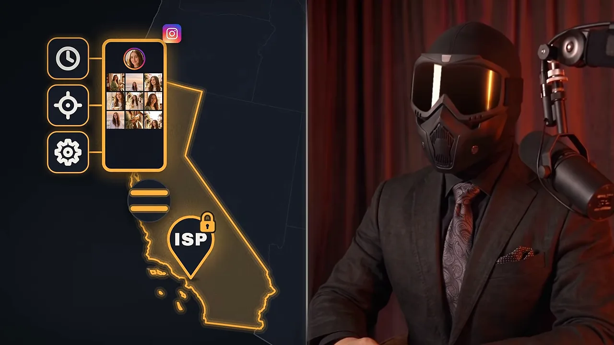
비용은 얼마나 드나요
화자는 가격이 사람들을 놀라게 하는 부분이라며 대략적인 숫자를 들려줘요. 두 방식은 돈을 내는 단위부터 달라요.
모바일·레지덴셜 프록시는 GB 단위로 사요. 아래 장면처럼 5GB 한 묶음에서 프록시를 1,000개라도 만들어 낼 수 있어서, 폰 1,000대라도 1,000번 결제하지 않아요. 폰이 쓰는 데이터만큼은 계속 나가지만 훨씬 싸다고 해요.
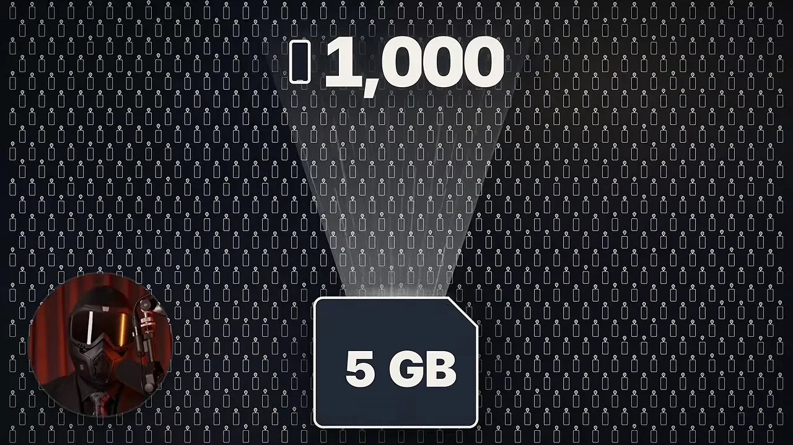
전용 ISP는 반대예요. IP 하나에 약 3달러, 폰 하나에 IP 하나라서 계정 수만큼 그대로 곱해져요. 화자가 말한 숫자를 그대로 그리면 이렇게 돼요.
화자는 비싸다는 걸 인정하면서도, 정지 없이 오래 가고 도달이 살아 있는 계정의 값이라고 정리해요. 계정당 한 달 3달러라는 계산이에요. 다시 말해 빨리 죽는 대량 계정은 GB 단위 프록시, 오래 가야 하는 오가닉 계정은 전용 ISP 프록시예요.
AI 연결하기: OpenCode와 GLM-5.3
폰과 프록시가 준비되면 AI를 붙여요. 필요한 건 둘이에요. 대화하는 앱인 OpenCode, 그리고 두뇌인 GLM-5.3이에요. 전체 연결을 한 그림으로 보면 이래요.
flowchart LR U["나
채팅으로 부탁"] --> O["OpenCode
phone-automation 폴더"] M["GLM-5.3
두뇌"] -.-> O R["규칙 파일 .md
매번 먼저 읽음"] -.-> O O --> D["devicefarm MCP 서버
자동화 요금제 필요"] D --> P["클라우드폰
인스타그램"]
왜 Claude가 아니라 GLM인가요
화자는 영상 초반에 이 선택을 설명해요. 화면 왼쪽 Z 로고(GLM(General Language Model))는 가운데 인스타그램 폰과 선으로 이어져 있고, 아래 Claude 로고는 연결되지 않은 채 흐리게 남아 있어요.
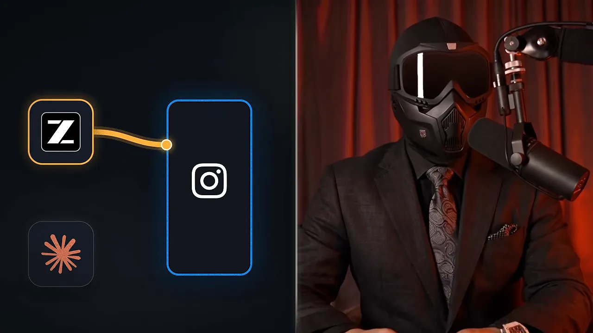
Claude will often refuse this kind of action, and GLM just does it.
Claude는 이런 작업을 자주 거절하는데, GLM은 그냥 해요.
— 영상 01:38
OpenCode에 GLM-5.3 연결하기
OpenCode는 무료예요. 사이트의 다운로드 페이지에서 내려받아 설치해요. 화면 위쪽엔 터미널용 설치 명령이, 아래쪽엔 OpenCode Desktop의 macOS·Windows 다운로드 버튼이 있어요.
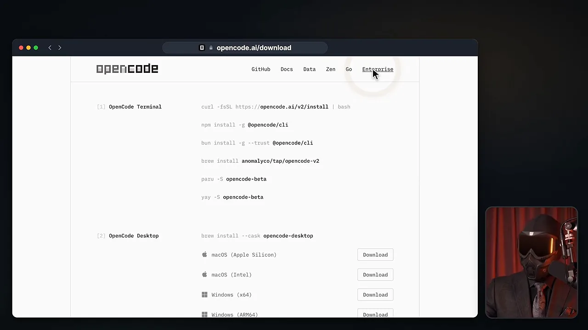
다음은 GLM-5.3 요금제를 사서 받은 키를 OpenCode에 넣는 단계예요. 아래 Providers 화면의 Connected providers에 'Z.AI Coding Plan · API key'가 연결돼 있어요. 그 아래 OpenCode, Anthropic 같은 다른 공급자도 보여요.
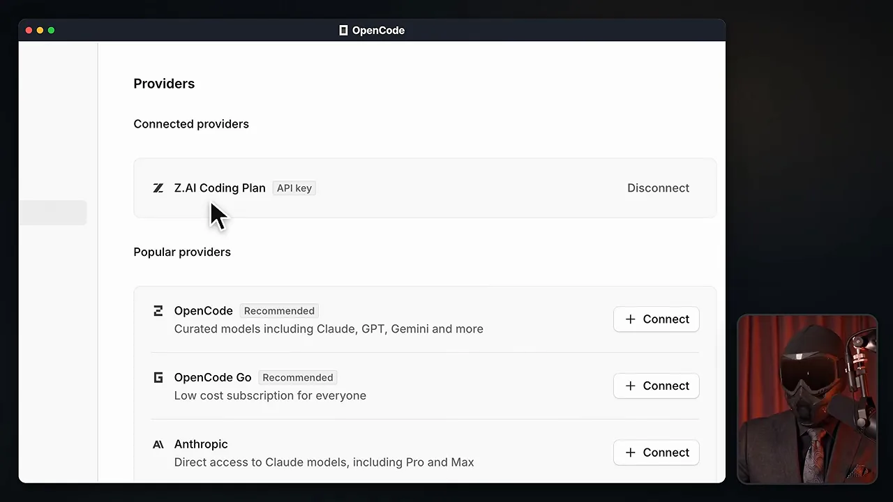
폰을 AI에 붙이기
OpenCode는 폴더 단위로 일해요. 그래서 폴더를 하나 만들어 OpenCode에서 열어요. 화자 폴더는 phone-automation이에요. 폰을 연결하는 수단은 devicefarm에 따로 있고, 쓰려면 월 99달러짜리 자동화 요금제가 필요해요. 이 요금제엔 사이트의 기성 자동화와 API(Application Programming Interface) 문서가 같이 들어 있다고 해요. 아래 devicefarm의 'API & Claude' 페이지는 키를 만들고(Step 1) Claude에 연결하는(Step 2) 순서를 안내해요.
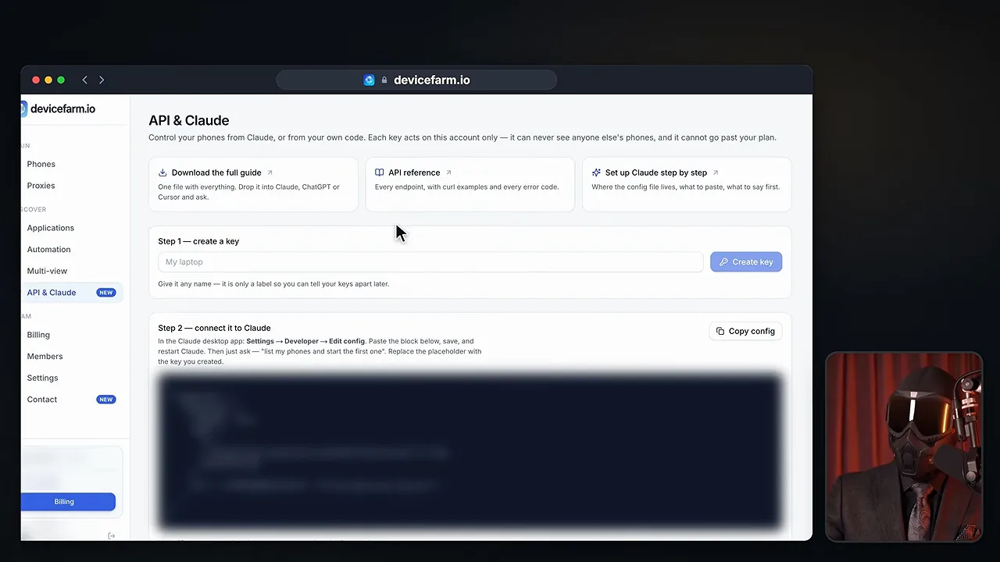
화자는 채팅창에 부탁 하나를 붙여 넣는 것으로 연결을 끝내요. 화면을 자세히 보면 이 메시지는 devicefarm의 MCP 서버를 opencode.jsonc에 추가하라는 지시예요. API 키는 ~/.config/devicefarm/api-key 파일에서 읽고, 절대 출력하거나 읽지 말라는 조건도 붙어 있어요. 화자는 말로는 'API'라고 하지만, 실제로 붙이는 건 MCP 서버예요.
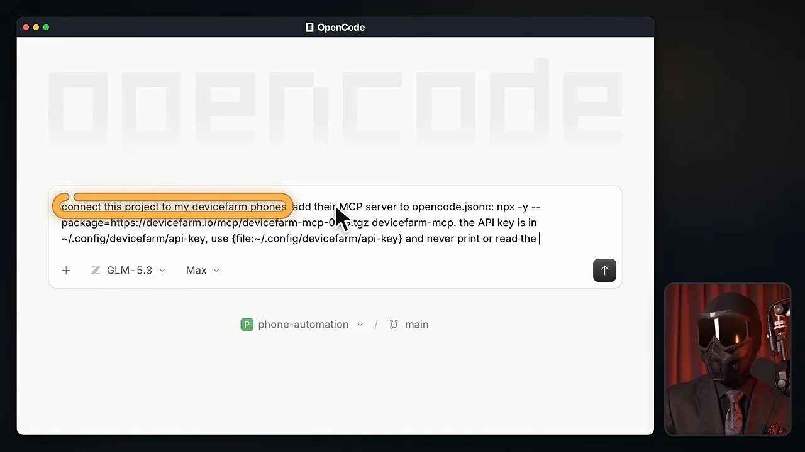
연결이 끝나면 AI가 폰을 볼 수 있는지 확인해요. 화면에서 AI는 devicefarm_list_phones 도구를 불러, 1번 폰 jesuusus가 realme RMX3852, Android 14, US(United States)/LA 프록시이고 지금은 꺼져 있다고 답해요.
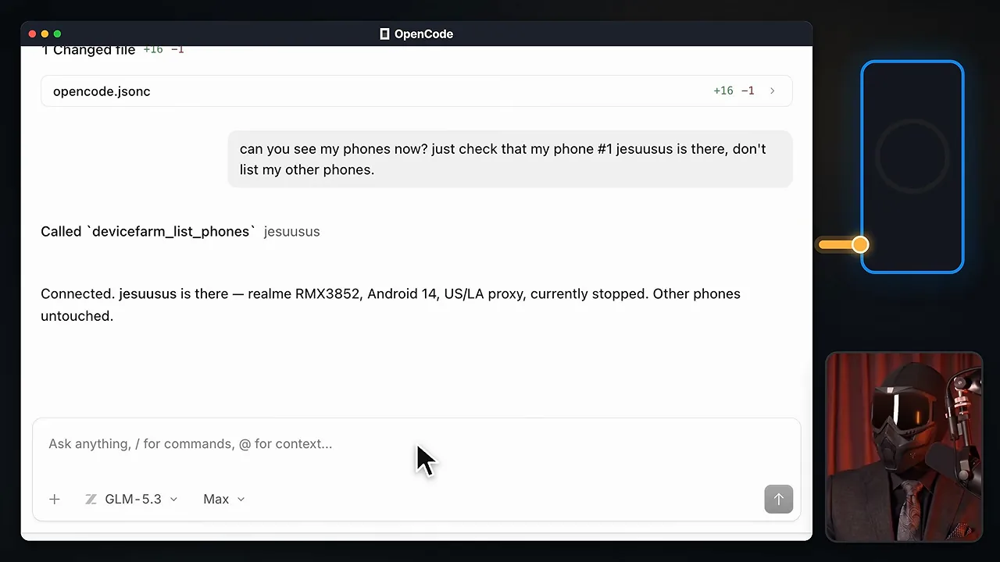
규칙 파일과 'Yo Kuroko' 확인
마지막 준비물은 규칙 파일이에요. AI가 폰에서 어떻게 움직일지 정한 평범한 .md 파일이에요. 폴더 구조를 보면 phone-automation 안에 올릴 콘텐츠를 담는 content 폴더, 규칙 파일 DS4.1Flash-1.md, 그리고 OpenCode 설정 파일 opencode.jsonc가 나란히 있어요.
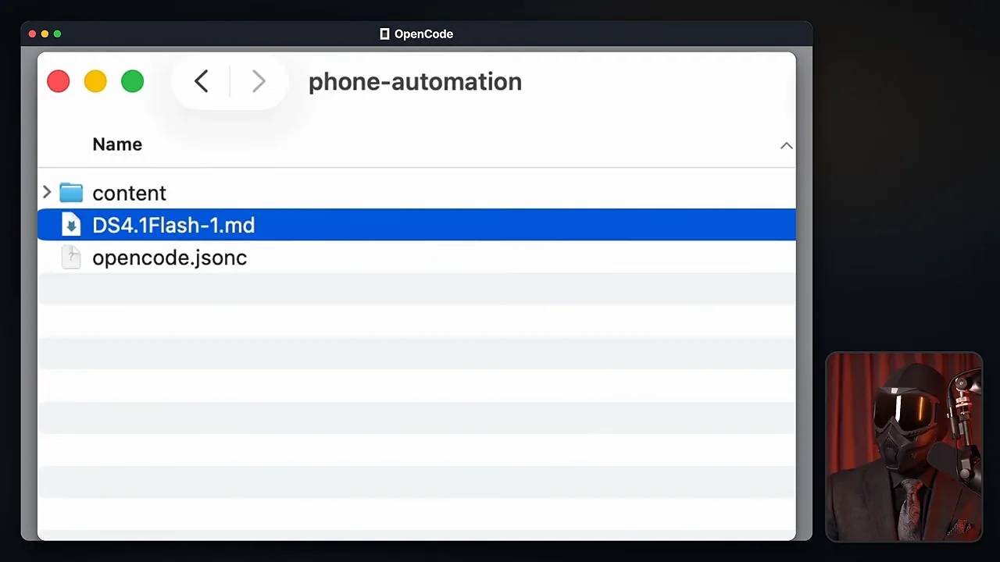
opencode.jsonc를 텍스트 편집기로 열고 instructions 줄 하나를 더해요. 아래 화면에서 두 번째 줄 "instructions": ["./DS4.1Flash-1.md"]가 그 줄이고, 그 아래 mcp 항목에 앞에서 AI가 넣은 devicefarm 서버 설정이 있어요.
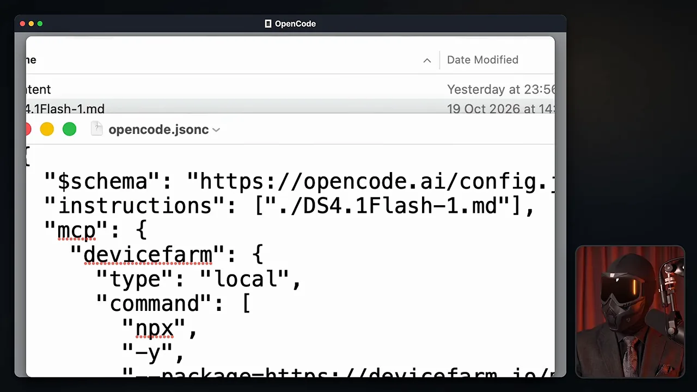
규칙이 먹혔는지는 인사 한 마디로 확인해요. 'yo kuroko are u here?'라고 치면, 규칙 파일 속 캐릭터 Kuroko가 '[Kuroko] here. what are we building?'이라고 답해요. 이렇게 답하지 않으면 파일 위치가 잘못된 거니 프로젝트 폴더를 다시 확인하라고 해요.
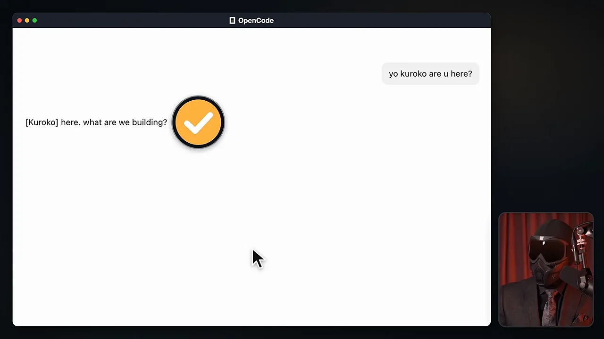
라이브 데모와 화자가 긋는 선
이제 처음에 본 장면을 처음부터 만들어요. 화자는 자기 폰, 자기 인스타그램에 릴스와 스토리를 올려 달라고 평범한 말로 부탁해요. 입력창의 문장은 'phone #1 jesuusus는 이미 켜져 있어. content/reel2.mp4와 content/story2.jpg를 보내고, 인스타그램에서 영상을 릴스로 올려'예요.
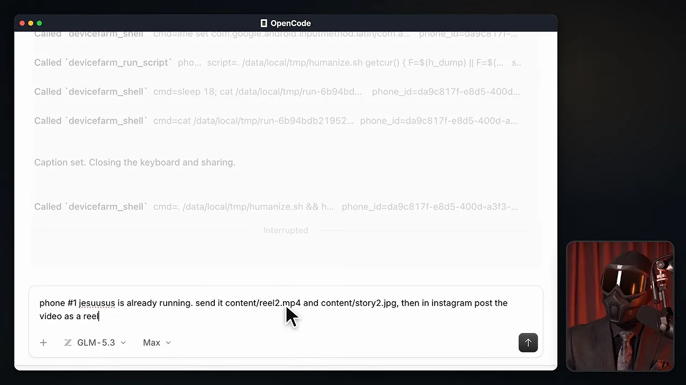
AI가 폰을 다루는 방식
화자는 AI가 폰에서 하는 일을 이렇게 설명해요. 먼저 화면 덤프를 떠서 지금 화면의 버튼을 모두 읽고 자기가 어디 있는지 알아내요. 그다음 인스타그램 열기, 게시 메뉴, 릴스 고르기, 캡션 쓰기, 공유를 한 단계씩, 사람처럼 해 나가요.
flowchart LR A["화면 덤프
버튼을 모두 읽기"] --> B["지금 위치 파악"] --> C["다음 버튼 탭
위치를 조금씩 흔들기"] --> A C --> D["인스타그램 열기 → 게시 → 릴스 선택
→ 캡션 → 공유"]
화면 덤프가 무엇을 읽는지는 아래 장면에서 보여요. 'New reel' 화면에서 뒤로 가기, 커버, 캡션 Sunny day, Hashtags, Tag people, Add location, Rename audio, Save draft, Share까지 화면 요소 하나하나가 주황색 상자로 둘러싸여 있어요.
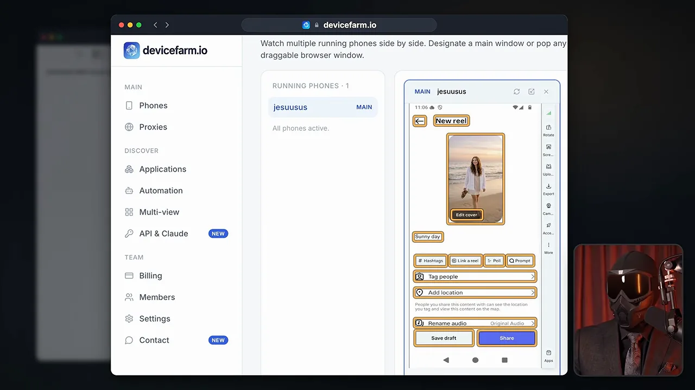
화자가 중요하다고 짚는 디테일이 하나 더 있어요. 사람은 같은 픽셀을 두 번 누르지 않으니, AI도 매번 정확히 같은 점을 누르면 안 돼요. 탭 위치가 조금씩 무작위로 움직여야 같은 패턴을 반복하는 로봇이 아니라 사람처럼 보인다고 해요.
릴스를 올린 뒤 프로필 화면이에요. 게시물 수가 3으로 올라가 있고, 아래 격자에 방금 올린 해변 사진 릴스가 보여요. 이어서 스토리까지 올리면 데모가 끝나요.
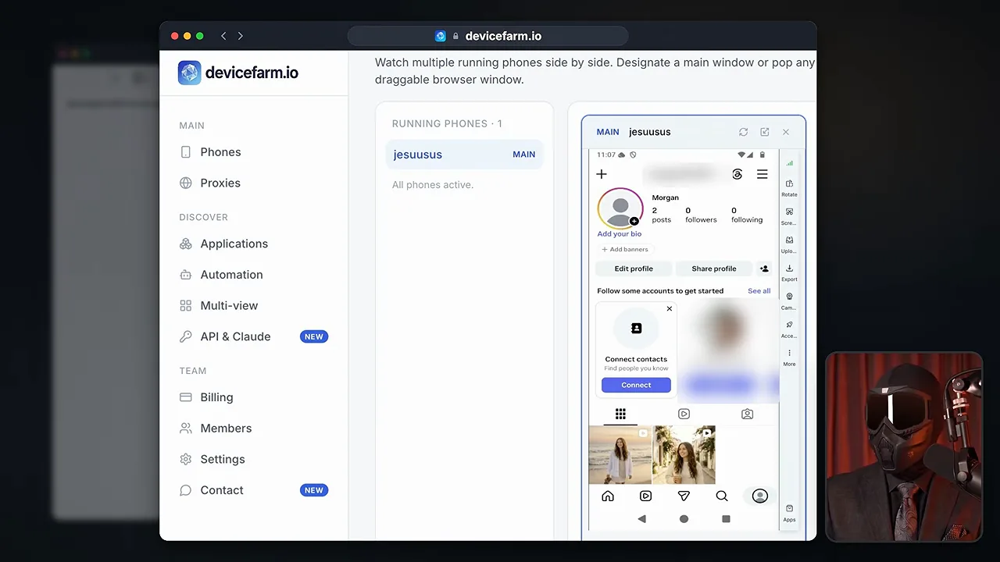
화자가 긋는 선
마무리에서 화자는 이걸 자기 계정에 자기 콘텐츠를 올리는 데만 썼다고 말해요. 같은 폰과 AI로 대량 계정 생성, 대량 팔로우·DM, 수백 계정 동시 릴스 게시도 할 수 있고 실제로 그렇게 하는 사람들이 있다고는 인정해요. 그 말을 할 때 화면엔 devicefarm의 'Instagram — send private messages'(여러 사용자에게 같은 메시지 보내기) 자동화 카드가 강조돼 있어요.
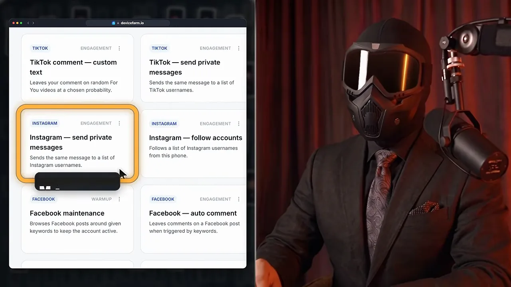